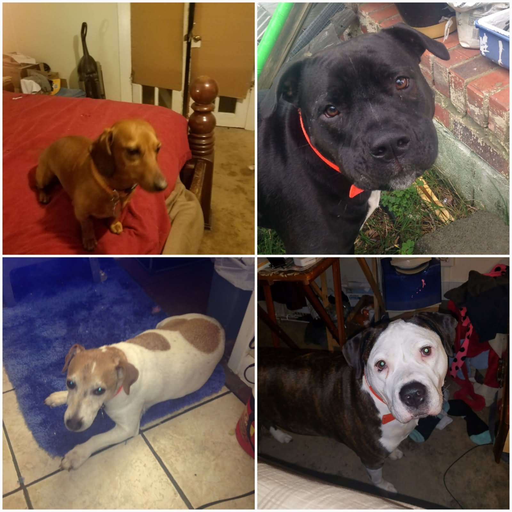

|  |
Muthu Kumar ManiSoftware QE Engineer in ServiceNow |
My passion is to work in a challenging and dynamic environment, which gives me an opportunity to add value to the company and enhance my knowledge and continuous development of upgrading by execution of vested responsibilities by the organization with loyalty and integrity.
| Automation Tool | Selenium with core Java, Rest API automation, Appium |
| Programming Language | Java, Java Script |
| FrameWork | Hybrid, Cucumber BDD, TestNG, Katalon |
| Defect Management Tool | Pivotal Tracker, Jira, BT1 |
| CI Tools | Jenkins |
| Project Model | water Fall and Agile |
| Version Control | GIT |
| Build Tools | Maven and Gradle |